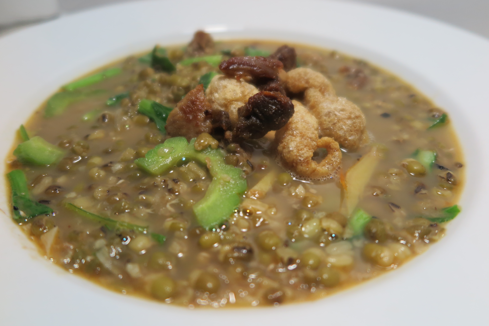

|

|
Description
Ginisang munggo is a Filipino savory mung bean soup. It is made with mung beans, garlic, tomatoes, onions, various vegetables, and patis. It is cooked with pork, tinapa, daing, or other seafood and meat. It is also commonly garnished with chicharon. The name means "stir-fried mung bean", even though it is a soup.
Ingredients
1 cup mung beans
6 ounces pork sliced into thin small pieces
1 Knorr pork cube
1 bunch spinach washed
1 cup malunggay leaves
2 medium tomato cubed
1 medium onion cubed
1/2 cup chicharon crumbled
4 cloves garlic chopped into small pieces
1/4 teaspoon ground black pepper
1 to 2 tablespoons fish sauce patis
6 cups water
3 tablespoons cooking oil
Procedure
1. Heat oil in a cooking pot.
2. Saute garlic, onion, and tomato.
3. Add the pork. Cook until the color of the pork turns light brown.
4. Pour water into the pot. Let boil
5. Add the pork cube. Stir.
6. Add the mung beans. Cover and adjust the heat between low to medium. Continue to cook until the mung beans becomes tender. Add more water, if necessary.
7. Put the malunggay leaves and spinach in the cooking pot. Stir and cook for 2 minutes.
8. Add ground black pepper and fish sauce. Cook for 2 to 3 minutes.
9. Transfer to a serving bowl. Top with chicharon.
10. Serve. Share and enjoy!
Price
P30 / serving
|